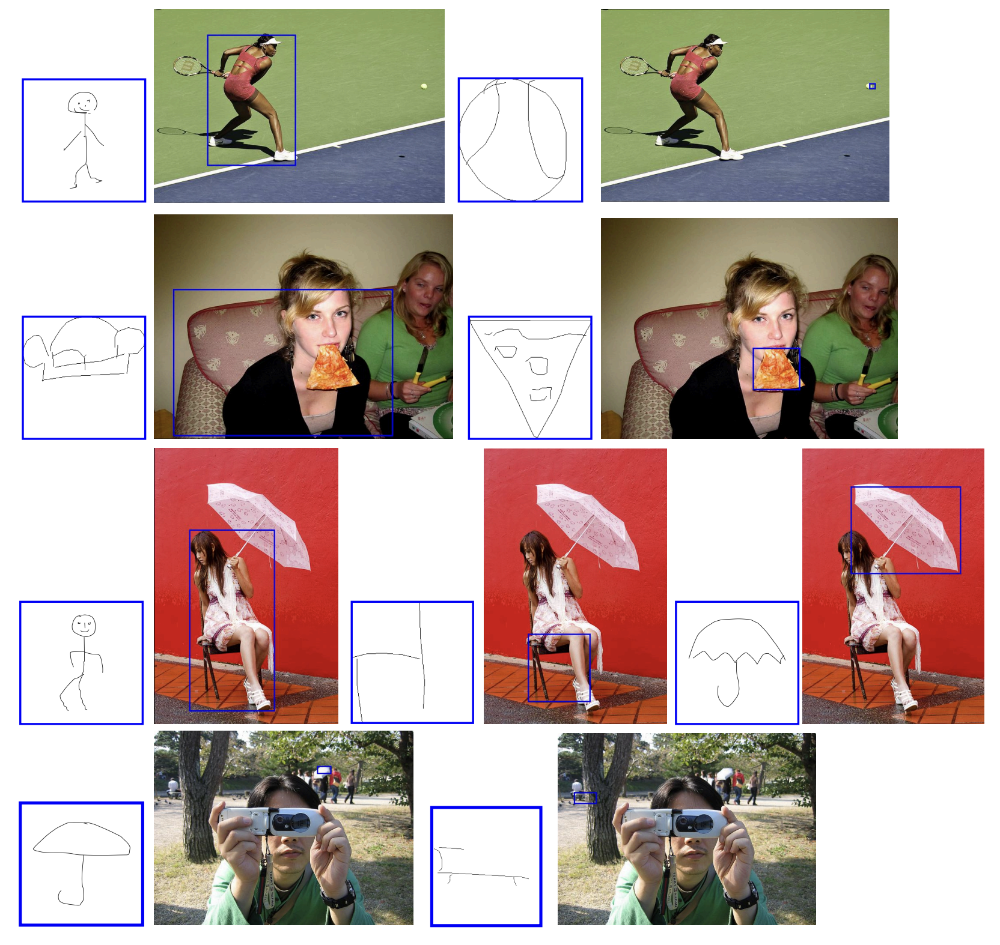

Qualitative Results for Detection


@InProceedings{gupta_2026_AAAI,
author = {Gupta, Rishi and Karuppasamy, Mukilan and Marjit, Shyam and Tripathi, Aditay and Chakraborty, Anirban},
title = {O3SLM: Open Weight, Open Data, and Open Vocabulary Sketch-Language Model},
booktitle = {Proceedings of the Winter Conference on Applications of Computer Vision (WACV)},
year = {2026},
}